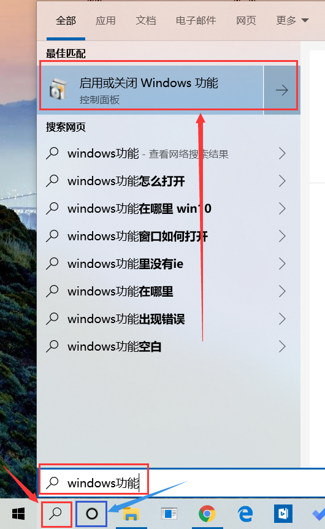
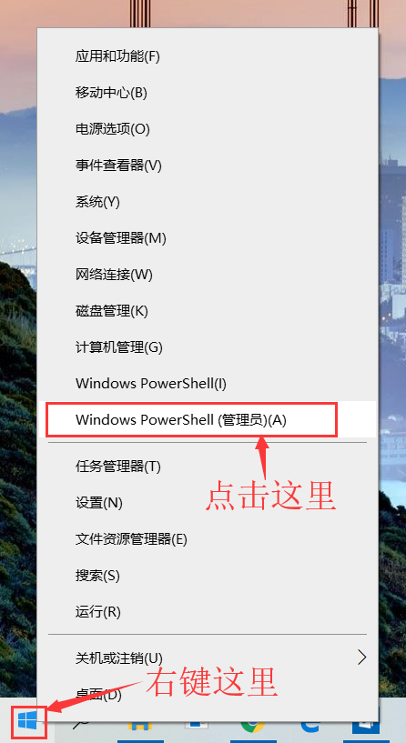
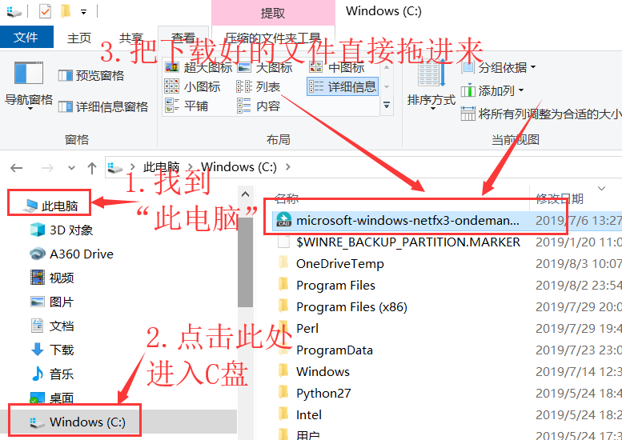
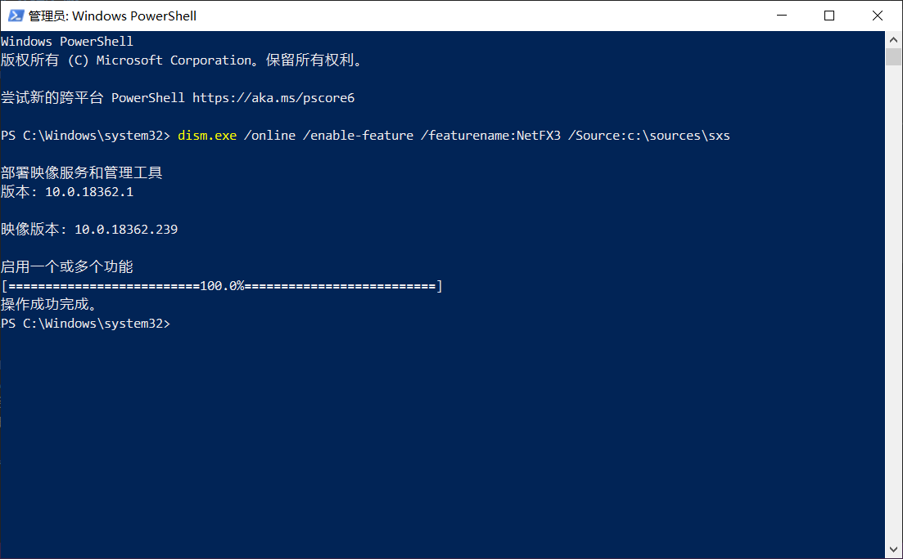

<!DOCTYPE html>
<html>
<head><meta name="generator" content="Hexo 3.9.0">
  <meta charset="utf-8">
  

  
  <title>安装.NET Framework 3.5(2.0)的几种方法 | 义修经验总结 - 计算机协会</title>
  <meta name="viewport" content="width=device-width, initial-scale=1, maximum-scale=1">
  <meta name="description" content="安装.NET Framework 3.5(2.0)的几种方法。本文作者：林志杨">
<meta name="keywords" content="软件安装">
<meta property="og:type" content="article">
<meta property="og:title" content="安装.NET Framework 3.5(2.0)的几种方法">
<meta property="og:url" content="http://help.cqjtuJX.club/2019/08/03/安装-Net-Framework-3-5-2-0-的几种方法/index.html">
<meta property="og:site_name" content="义修经验总结 - 计算机协会">
<meta property="og:description" content="安装.NET Framework 3.5(2.0)的几种方法。本文作者：林志杨">
<meta property="og:locale" content="zh-cn">
<meta property="og:image" content="http://help.cqjtujx.club/2019/08/03/安装-Net-Framework-3-5-2-0-的几种方法/搜索_Windows功能.png">
<meta property="og:image" content="http://help.cqjtujx.club/2019/08/03/安装-Net-Framework-3-5-2-0-的几种方法/%E8%AE%BE%E7%BD%AE_Windows%E5%8A%9F%E8%83%BD.png">
<meta property="og:image" content="http://help.cqjtujx.club/2019/08/03/安装-Net-Framework-3-5-2-0-的几种方法/打开_Powershell.png">
<meta property="og:image" content="http://help.cqjtujx.club/2019/08/03/安装-Net-Framework-3-5-2-0-的几种方法/移动到C盘_Powershell.png">
<meta property="og:image" content="http://help.cqjtujx.club/2019/08/03/安装-Net-Framework-3-5-2-0-的几种方法/输入命令2_Powershell.png">
<meta property="og:updated_time" content="2019-08-30T04:39:37.107Z">
<meta name="twitter:card" content="summary">
<meta name="twitter:title" content="安装.NET Framework 3.5(2.0)的几种方法">
<meta name="twitter:description" content="安装.NET Framework 3.5(2.0)的几种方法。本文作者：林志杨">
<meta name="twitter:image" content="http://help.cqjtujx.club/2019/08/03/安装-Net-Framework-3-5-2-0-的几种方法/搜索_Windows功能.png">
  
    <link rel="alternate" href="/atom.xml" title="义修经验总结 - 计算机协会" type="application/atom+xml">
  
  
    <link rel="icon" href="/favicon.png">
  
  
    <link href="//fonts.lug.ustc.edu.cn/css?family=Source+Code+Pro" rel="stylesheet" type="text/css">
  
  <link rel="stylesheet" href="/css/style.css">
</head>
</html>
<body>
  <div id="container">
    <div id="wrap">
      <header id="header">
  <div id="banner"></div>
  <div id="header-outer" class="outer">
    <div id="header-title" class="inner">
      <h1 id="logo-wrap">
        <a href="/" id="logo">义修经验总结 - 计算机协会</a>
      </h1>
      
        <h2 id="subtitle-wrap">
          <a href="/" id="subtitle">重庆交通大学 - 计算机协会</a>
        </h2>
      
    </div>
    <div id="header-inner" class="inner">
      <nav id="main-nav">
        <a id="main-nav-toggle" class="nav-icon"></a>
        
          <a class="main-nav-link" href="/">Home</a>
        
          <a class="main-nav-link" href="/archives">Archives</a>
        
      </nav>
      <nav id="sub-nav">
        
          <a id="nav-rss-link" class="nav-icon" href="/atom.xml" title="RSS Feed"></a>
        
        <a id="nav-search-btn" class="nav-icon" title="Search"></a>
      </nav>
      <div id="search-form-wrap">
        <form action="//google.com/search" method="get" accept-charset="UTF-8" class="search-form"><input type="search" name="q" class="search-form-input" placeholder="Search"><button type="submit" class="search-form-submit">&#xF002;</button><input type="hidden" name="sitesearch" value="http://help.cqjtuJX.club"></form>
      </div>
    </div>
  </div>
</header>
      <div class="outer">
        <section id="main"><article id="post-安装-Net-Framework-3-5-2-0-的几种方法" class="article article-type-post" itemscope itemprop="blogPost">
  <div class="article-meta">
    <a href="/2019/08/03/安装-Net-Framework-3-5-2-0-的几种方法/" class="article-date">
  <time datetime="2019-08-03T12:53:11.000Z" itemprop="datePublished">2019-08-03</time>
</a>
    
  </div>
  <div class="article-inner">
    
    
      <header class="article-header">
        
  
    <h1 class="article-title" itemprop="name">
      安装.NET Framework 3.5(2.0)的几种方法
    </h1>
  

      </header>
    
    <div class="article-entry" itemprop="articleBody">
      
        <p>安装.NET Framework 3.5(2.0)的几种方法。<br>本文作者：林志杨</p>
<a id="more"></a>
<hr>

<blockquote>
<h2 id="方法一：使用-“启用Windows功能”-安装"><a href="#方法一：使用-“启用Windows功能”-安装" class="headerlink" title="方法一：使用 “启用Windows功能” 安装"></a>方法一：使用 “启用Windows功能” 安装</h2></blockquote>
<h3 id="详细步骤："><a href="#详细步骤：" class="headerlink" title="详细步骤："></a>详细步骤：</h3><ol>
<li><strong><em>点击</em></strong> 任务栏左下角中的 <strong>“放大镜”按钮</strong> <em>（图中红色箭头所指的红色框框里）</em> 或者 <strong>“圆圈”按钮</strong> <em>（图中蓝色箭头所指的蓝色框框里）</em> ，然后使用输入法直接 <strong><em>输入</em></strong> <strong>“Windows功能”</strong>，如图所示，<strong><em>选择</em></strong> <strong>“启用或关闭Windows功能”</strong> </li>
</ol>



<blockquote>
<ul>
<li>上文中的 <strong>“放大镜”按钮</strong> 在 <strong>Windows 1903及以上</strong> 的版本才有，<br>如果你的电脑上没有，点击 <strong>“圆圈”按钮</strong> 效果是一样的。</li>
</ul>
</blockquote>
<blockquote>
<ul>
<li><em>使用输入法直接输入</em> 的意思是使用键盘打出英文字母和汉字。</li>
</ul>
</blockquote>
<ol start="2">
<li>如图所示，<strong><em>选中</em></strong> <strong>.NET Framework 3.5(包括 .NET 2.0 和 3.0)</strong></li>
</ol>
<p></p>
<ol start="3">
<li><strong><em>点击</em></strong> <strong>确定</strong> 按钮，会自动开始安装</li>
</ol>
<hr>
<blockquote>
<h2 id="方法二：使用-DISM程序-安装"><a href="#方法二：使用-DISM程序-安装" class="headerlink" title="方法二：使用 DISM程序 安装"></a>方法二：使用 DISM程序 安装</h2></blockquote>
<p><strong>DISM</strong> 是Windows系统自带的一个程序，可以使用它来安装 <em>.NET Framework 3.5</em> 。使用DISM.exe安装 <em>.NET Framework 3.5</em> 需要准备一个文件：<em>microsoft-windows-netfx3-ondemand-package.cab</em> 。这个文件存在于Windows的安装镜像中 <em>( \sources\sxs\ )</em>。考虑到学校的网络条件，我们从系统镜像中提取了这个文件，省去下载一个完整系统镜像的时间。</p>
<h3 id="详细步骤：-1"><a href="#详细步骤：-1" class="headerlink" title="详细步骤："></a>详细步骤：</h3><ol>
<li><strong><em>右键</em></strong> <strong>“开始菜单” 按钮</strong>，然后 <strong><em>点击</em></strong> <strong>“Windows PowerShell(管理员)(A)”</strong> 打开PowerShell程序</li>
</ol>


<ol start="2">
<li><strong><em>下载</em></strong> <strong>microsoft-windows-netfx3-ondemand-package.cab</strong> 文件（<a href="http://files.cqjtujx.club/microsoft-windows-netfx3-ondemand-package.cab" target="_blank" rel="noopener">下载地址 1</a> | <a href="http://pan-yz.chaoxing.com/share/info/ba6356b3e7895cfe" target="_blank" rel="noopener">网盘下载</a> 密码 : <strong>740uqc</strong>）,并把该文件 <strong><em>移动</em></strong> 到 <strong>C盘根目录下</strong> </li>
</ol>


<ol start="3">
<li><strong><em>输入</em></strong> 以下命令，然后 <strong><em>按下</em></strong> <strong>回车</strong>（即键盘上的 <strong>Enter</strong> 键 ）</li>
</ol>
<figure class="highlight plain"><table><tr><td class="gutter"><pre><span class="line">1</span><br></pre></td><td class="code"><pre><span class="line">Dism.exe /online /enable-feature /featurename:NetFX3 /source:C:\ /LimitAccess</span><br></pre></td></tr></table></figure>

<ol start="4">
<li>如图，<strong>提示“操作成功完成”</strong>，说明安装<strong>已经完成</strong>。<strong><em>重新启动系统</em></strong> 即可。</li>
</ol>

<br>

<hr>

<p><a href="https://github.com/cqjtu-acm/article/issues" target="_blank" rel="noopener">文章纠错</a> | 看不懂 | 投稿 | 提建议：477897024 (QQ群)</p>

      
    </div>
    <footer class="article-footer">
      <a data-url="http://help.cqjtuJX.club/2019/08/03/安装-Net-Framework-3-5-2-0-的几种方法/" data-id="ck06lpedk000de8whbcmp2o23" class="article-share-link">Share</a>
      
      
  <ul class="article-tag-list"><li class="article-tag-list-item"><a class="article-tag-list-link" href="/tags/软件安装/">软件安装</a></li></ul>

    </footer>
  </div>
  
    
<nav id="article-nav">
  
    <a href="/2019/08/17/安装AutoCAD简明教程/" id="article-nav-newer" class="article-nav-link-wrap">
      <strong class="article-nav-caption">Newer</strong>
      <div class="article-nav-title">
        
          安装AutoCAD简明教程
        
      </div>
    </a>
  
  
    <a href="/2019/08/03/hello-world/" id="article-nav-older" class="article-nav-link-wrap">
      <strong class="article-nav-caption">Older</strong>
      <div class="article-nav-title">Hello World</div>
    </a>
  
</nav>

  
</article>

</section>
        
          <aside id="sidebar">
  
    

  
    
  <div class="widget-wrap">
    <h3 class="widget-title">Tags</h3>
    <div class="widget">
      <ul class="tag-list"><li class="tag-list-item"><a class="tag-list-link" href="/tags/系统问题/">系统问题</a></li><li class="tag-list-item"><a class="tag-list-link" href="/tags/软件安装/">软件安装</a></li></ul>
    </div>
  </div>


  
    
  <div class="widget-wrap">
    <h3 class="widget-title">Tag Cloud</h3>
    <div class="widget tagcloud">
      <a href="/tags/系统问题/" style="font-size: 10px;">系统问题</a> <a href="/tags/软件安装/" style="font-size: 20px;">软件安装</a>
    </div>
  </div>

  
    
  <div class="widget-wrap">
    <h3 class="widget-title">Archives</h3>
    <div class="widget">
      <ul class="archive-list"><li class="archive-list-item"><a class="archive-list-link" href="/archives/2019/09/">九月 2019</a></li><li class="archive-list-item"><a class="archive-list-link" href="/archives/2019/08/">八月 2019</a></li></ul>
    </div>
  </div>


  
    
  <div class="widget-wrap">
    <h3 class="widget-title">Recent Posts</h3>
    <div class="widget">
      <ul>
        
          <li>
            <a href="/2019/09/05/office-2010-2016-校园网下载地址收集整理/">office 2016 2010 校园网下载地址收集整理</a>
          </li>
        
          <li>
            <a href="/2019/08/31/Adobe-Premiere-CC-2019-下载地址/">Adobe Premiere Pro CC 2019 下载地址</a>
          </li>
        
          <li>
            <a href="/2019/08/31/Win10恢复出厂设置后鼠标一直转圈圈解决方案/">Win10恢复出厂设置后鼠标一直转圈圈解决方案</a>
          </li>
        
          <li>
            <a href="/2019/08/30/Matlab-2014-安装教程/">Matlab R2014a 安装教程</a>
          </li>
        
          <li>
            <a href="/2019/08/30/重新安装Office家庭学生版/">重新安装Office家庭学生版</a>
          </li>
        
      </ul>
    </div>
  </div>

  
</aside>
        
      </div>
      <footer id="footer">
  
  <div class="outer">
    <div id="footer-info" class="inner">
      &copy; 2019 计算机协会<br>
      Powered by <a href="http://hexo.io/" target="_blank">Hexo</a>
    </div>
  </div>
</footer>
    </div>
    <nav id="mobile-nav">
  
    <a href="/" class="mobile-nav-link">Home</a>
  
    <a href="/archives" class="mobile-nav-link">Archives</a>
  
</nav>
    

<script src="https://cdn.bootcss.com/jquery/2.0.3/jquery.min.js"></script>


  <link rel="stylesheet" href="/fancybox/jquery.fancybox.css">
  <script src="/fancybox/jquery.fancybox.pack.js"></script>


<script src="/js/script.js"></script>


  </div>
</body>
</html>